Fachexkursionen:
Karner Ingenieure
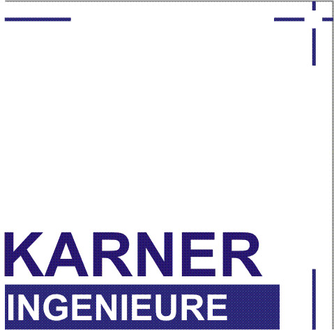
.
Die KARNER INGENIEURE GmbH hat sich auf das Gebiet des
Vermessungswesens und der
Geoinformatik spezialisiert und zählt in diesem Bereich zu den leistungsfähigsten
Ingenieurbüros in Deutschland. Bei der Exkursion bekommt ihr einen besonderen Einblick
in aktuelle Projekte und deren Ablauf.
Walchenseekraftwerk
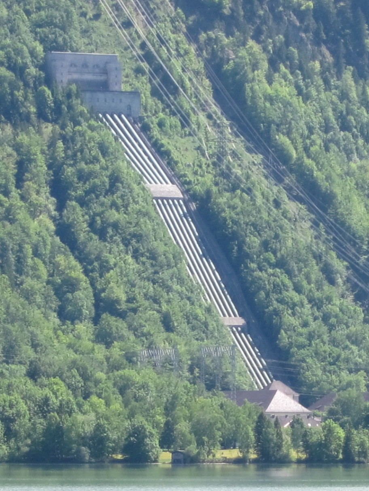
Bild von Oliver
Spalt CC
BY-SA 2.5
Bei einer Führung durch das 1924 erbaute Walchenseekraftwerk bei
Kochel am See erhaltet
ihr einen besonderen Einblick in den Betrieb eines der größten Speicherkraftwerke
Deutschlands. Besonders ist das genutzte natürliche Gefälle von gut 200m zwischen dem
Walchensee und dem Kochelsee. Nach der Führung habt ihr die Möglichkeit, eine kleine
Wanderung entlang des Kochelsees zu unternehmen. Bringt deswegen bitte festes Schuhwerk
mit.
Deutsches Zentrum für Luft- und Raumfahrt Oberpfaffenhofen
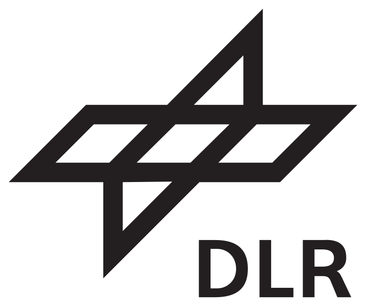
Der Standort in Oberpfaffenhofen ist einer von 19 nationalen
Niederlassungen des
Forschungszentrum für Luft- und Raumfahrt und zugleich eines der größten in
Deutschland. Schwerpunkte sind u.a. die Beteiligung an Weltraummissionen, die
Erdbeobachtung und die Klimaforschung. Diese Exkursion führt durch verschiedene
Abteilungen und mehrere Kontrollzentren, darunter das EOC und das GSOC.
NavVis
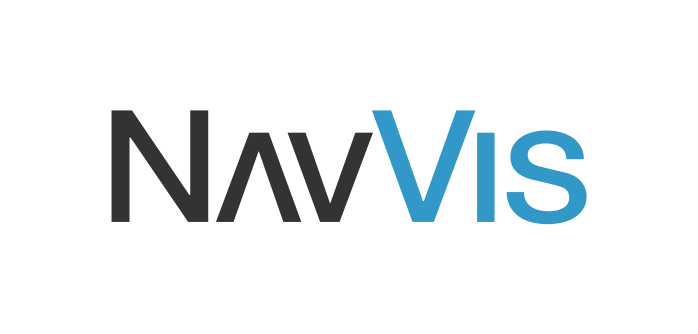
Das Startup hat ein Indoor-Navigationssystem entwickelt, welches
Zentimetergenaue 3D-
Karten innerhalb von Gebäuden erstellt. NavVis möchte damit die Lücke zwischen Indoor-
und Outdoorkarten schließen. Bei der Exkursion habt Ihr die Möglichkeit, die Technik
mit Hilfe einer
VR-Brille zu erleben.
Esri Deutschland
ESRI Inc. entwickelt Geoinformationssysteme, unter anderem ArcGIS,
welches auf der
ganzen Welt genutzt werden. Bei der Exkursion werdet Ihr Einblicke in die Entwicklung
dieser Produkte erhalten.
Überraschung
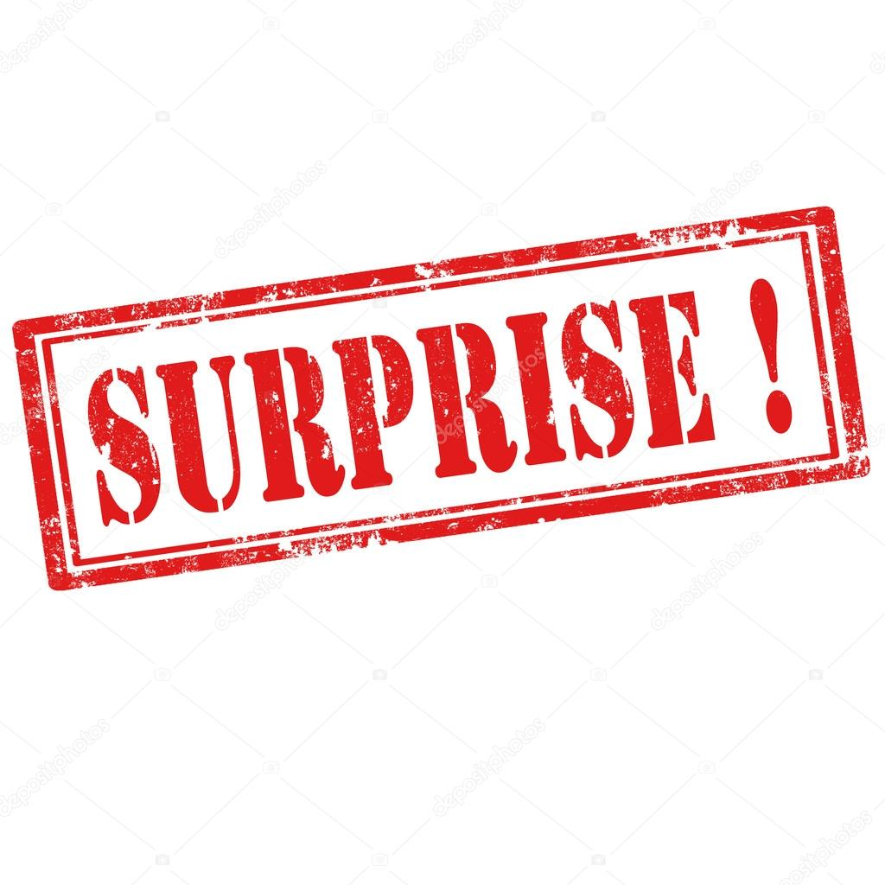
Ihr wollt mal überrascht werden? Dann ist diese Exkursion hier genau
richtig.
Wo es hingeht, wird erst kurz vorher bekanntgegeben.
Stadtexkursionen:
Brauerei Richel
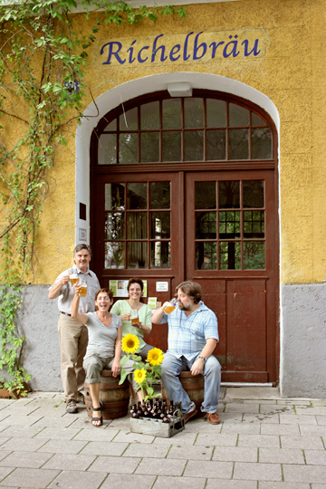
Bild von Richelbräu
Das “Projekt Richelbräu“ gärt schon etliche Jahre unter dem
historischen Gewölbe der
Richelstraße 26, im Münchner Stadtteil Neuhausen. Dort wird
traditionell Bier gebraut
und zur Verkostung angeboten. Euch erwartet eine interessante
Brauereiführung!
BMW Welt und Olympiapark

Bild von Richard
Bartz CC
BY-SA 2.5
Zuerst begeben wir uns zu den Bayerischen Motoren Werke. Dort
entdeckt ihr spannende Erlebnisse in der BMW Welt, über die
Automobilproduktion und der Historie des in München beheimateten
Autoherstellers. Anschließend begeben wir uns in den benachbarten
Olympiapark, dessen Bauten mit ihrer einzigartigen Architektur
einen Besuch wert sind.
Altstadtführung
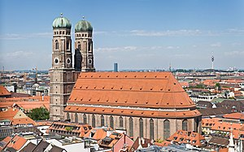
Bild von DAVID ILIFF CC BY-SA 3.0
Wir zeigen euch bei dieser Tour die interessanten Orte der Münchner
Altstadt. Dabei erfahrt ihr von einem kundigen Führer interessante
und historische Details zu den verschieden Stationen. Frauenkirche,
Stachus, Marienplatz sind Haltepunkte, die hier nicht fehlen
werden!
Deutsches Museum
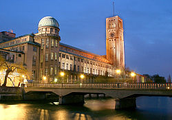
Bild von Max-k muc CC BY-SA 2.0 DE
Das Deutsche Museum von Meisterwerken der Naturwissenschaft und
Technik in München ist nach Ausstellungsfläche das größte
Wissenschafts- und Technikmuseum der Welt.
Erklärtes Ziel ist es, dem interessierten Laien in verständlicher
Weise naturwissenschaftliche und technische Erkenntnisse möglichst
lebendig nahezubringen. Nach einer allgemeinen Führung erforschen
wir auf eigene Faust das vielseitige Museum. Spannend für uns: Die
Geodäsieabteilung.
Glühweintour durch den Englischen Garten
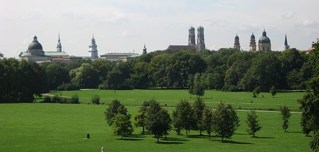
Bild von Ludmiła Pilecka CC BY-SA 3.0
Entdeckt bei einem gemütlichen Spaziergang das grüne Münchner
Kleinod im Herzen der Stadt. Auf dem Weg vom Teehaus über den
Chinesischen Turm zum Kleinhesseloher See, werdet ihr bestens mit
Glühwein versorgt.
Schloss Nymphenburg
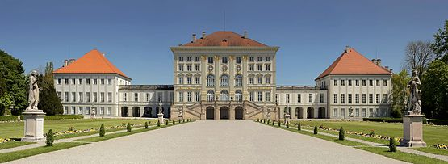
Bild von Richard Bartz CC BY-SA 2.5
Das Schloss Nymphenburg ist eines der großen Königsschlösser
Europas. Es liegt im Münchner Westen, ist von einer großen
Parkanlage umgeben und war jahrhundertelang die Sommerresidenz
der Wittelsbacher.
Bei einer Führung könnt ihr euch diese Sehenswürdigkeit genauer
anschauen.
Mit der Tram durch die Stadt
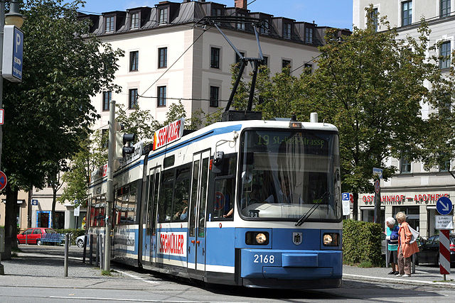
Bild von Maurits90 CC BY 3.0
Sightseeing ohne schmerzende Füße:
Die Tramlinie 19 fährt an vielen Touristenattraktionen vorbei und
eignet sich hervorragend für eine kleine Tour durch die Stadt.
Unter anderem passiert ihr hierbei den Justizpalast, den Stachus,
den Promenadenplatz, die Oper, den Marienhof und auch die
Maximilianstraße. Bei einem kleinen Zwischenstopp am Maximilianeum
habt ihr, während einer kleinen Erfrischung, einen kurzen Überblick
über die Stadt.
Schmankerltour auf dem Viktualienmarkt
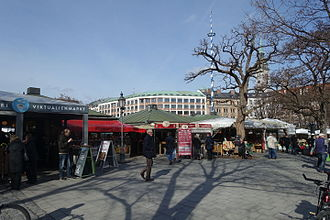
Bild von Wikiolo CC BY-SA 3.0
Der Viktualienmarkt ist ein 2 Hektar großer ständiger Markt für
Lebensmittel im Herzen der Altstadt Münchens. Er besteht bereits
seit dem 18ten Jahrhundert und ist mit seinem breiten Angebot immer
eine Anlaufstelle für frische und qualitativ hochwertige
Lebensmittel.
Bei dieser Tour erfahrt ihr etwas über die Geschichte des Marktes,
während ihr an ein paar Ständen kleine Schmankerl kosten könnt.